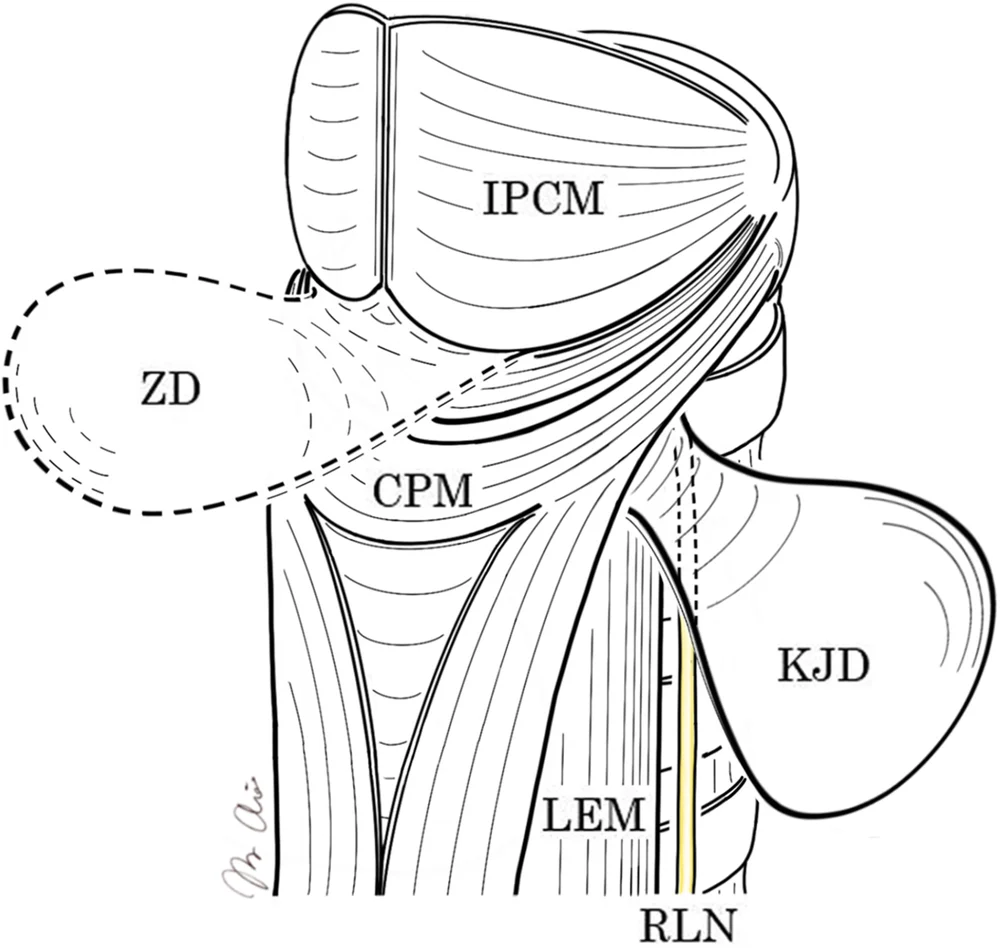
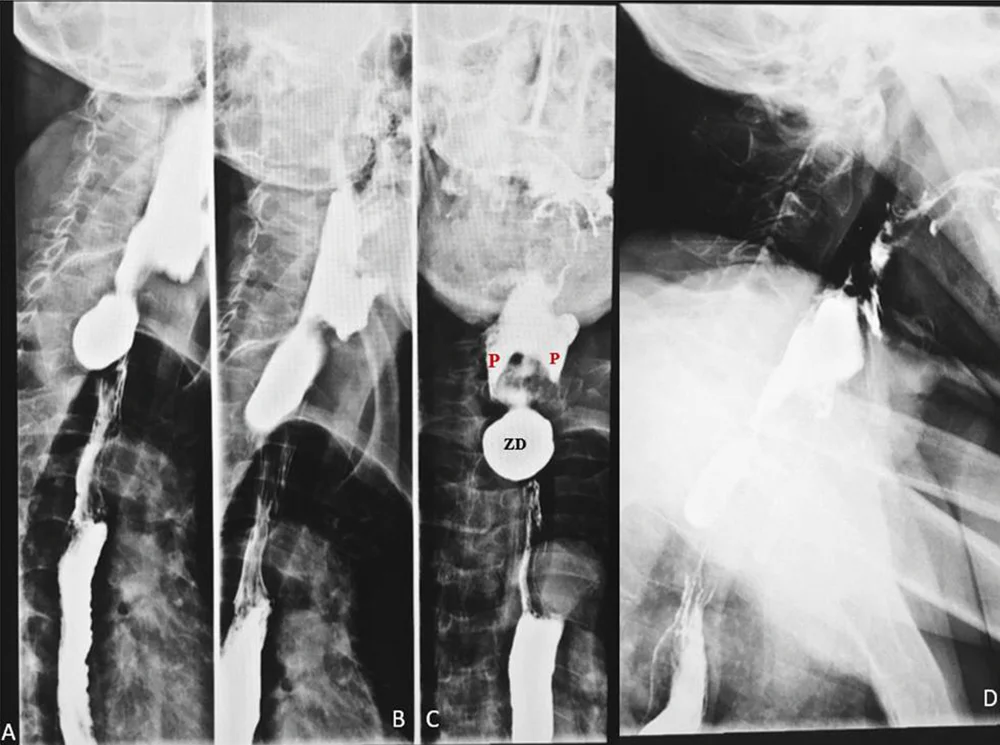

DX.8 — Diverticule de Zenker
Le diverticule de Zenker est une poche de la paroi postérieure de l'hypopharynx, qui retient les aliments puis les régurgite chez un sujet âgéS1S2. Le transit baryté sous vidéofluoroscopie le confirme, et la section endoscopique du muscle cricopharyngien le traite en première intentionS1.
1. Définition
La Société européenne d'endoscopie gastro-intestinale (ESGE) a défini le diverticule de Zenker dans sa recommandation de 2020S1. Elle le décrit comme un diverticule de pulsion qui se développe dans une zone de faiblesse de l'hypopharynx postérieur, le triangle de KillianS1. Ce triangle se situe entre les fibres thyropharyngiennes et les fibres cricopharyngiennes du muscle constricteur inférieur du pharynxS1. La poche ne contient que la muqueuse et la sous-muqueuse, ce qui en fait un pseudo-diverticule acquisS4.
2. Épidémiologie (Suisse, puis Europe)
Le diverticule de Zenker est le plus fréquent des diverticules de l'œsophage : environ 80 % d'entre eux siègent à la jonction pharyngo-œsophagienne, selon l'Hôpital universitaire de Zurich (USZ)S3S4. Une thèse genevoise de 2008 cite, d'après la littérature, 2 cas pour 100 000 habitants par anS2. La série norvégienne de 2024 mesure 0,57 forme opérée pour 100 000 par anS11. L'ESGE cite une prévalence de 0,01 à 0,11 %, qui provient de la population américaine faute de donnée européenne équivalenteS1. Elle touche surtout l'homme au cours des septième et huitième décennies, et le tableau rassemble ces chiffresS1.
| Chiffre | Population | Source et année |
|---|---|---|
| Environ 80 % des diverticules œsophagiens sont pharyngo-œsophagiens | Revue suisse de l'USZ | Gutschow, 2022 S3 |
| 2 cas pour 100 000 habitants par an | Revue de la littérature d'une thèse genevoise | El Makhloufi, 2008 S2 |
| Prévalence de 0,01 à 0,11 % | Population américaine, citée par l'ESGE | ESGE, 2020 S1 |
| 21 patients opérés, dont 14 hommes, âge moyen 72 ans (de 60 à 97 ans) | Série genevoise des Hôpitaux universitaires de Genève (HUG) | El Makhloufi, 2008 S2 |
| Carcinome dans la poche chez 0,4 à 1,5 % des patients | Revue de la littérature | El Makhloufi, 2008 S2 |
Une fenêtre précise le terrain, et une autre l'histoire naturelle et les complications.
Qui est touché, et pourquoi
Le diverticule de Zenker est une maladie gériatrique, qui dépend de variations anatomiques comme un large triangle de Killian, et parfois héréditaireS2. Il semble plus fréquent en Europe du Nord, ce que certains auteurs expliquent par un cou plus longS2. Ces patients âgés présentent souvent des comorbidités sévères, ce qui pèse sur le choix du traitementS2.
La poche siège habituellement à gauche, et seulement 10 % des diverticules se développent à droiteS2. L'espace entre la concavité de l'œsophage cervical et l'artère carotide, plus large à gauche, explique cette prédominanceS2.
Histoire naturelle et complications
La poche grandit lentement pendant des années, et l'allongement de la vie accroît le nombre de patients concernésS4. Les fausses routes provoquent des inhalations bronchiques et des pneumopathies à répétition, qui font la gravité de la maladieS2. La dysphagie et la régurgitation entraînent une dénutrition et une fragilité, qui dégradent fortement la qualité de vieS4. Une fenêtre explique pourquoi ces patients inhalent souvent en silenceS5.
Un carcinome épidermoïde peut naître dans la poche : la revue genevoise en recense 45 cas, et 9 cas de carcinome in situS2. Ce risque, rare mais réel, justifie l'examen histologique de toute paroi réséquéeS2.
Pourquoi le sujet âgé inhale en silence
United European Gastroenterology (UEG) et la European Society for Neurogastroenterology and Motility (ESNM) décrivent la dysphagie oropharyngée comme un syndrome gériatrique majeur, lié à la dépendance fonctionnelle et cognitiveS5. Le vieillissement apporte des ostéophytes cervicaux, une sarcopénie, une perte d'élasticité des tissus, moins de salive et un mauvais état dentaireS5.
La sensibilité oropharyngée baisse et le réflexe de toux s'affaiblit chez le sujet âgé, ce qui augmente le risque d'inhalation silencieuseS5. Le patient porteur d'une poche peut donc inhaler sans tousser, et la pneumonie devient parfois le premier signe.
3. Physiopathologie
La maladie se comprend après une base anatomo-fonctionnelle : le sphincter supérieur de l'œsophage (SSO) reste fermé au repos, puis il se relâche et s'ouvre à chaque déglutitionS2. L'hypothèse la mieux acceptée retient une relaxation normale du SSO, mais une ouverture insuffisante par perte de compliance du muscle cricopharyngienS2. Ce muscle présente en effet une inflammation, une fibrose et une dégénérescence à l'histologieS2.
Le bol pousse donc contre un sphincter peu extensible : la pression dans le pharynx augmente à chaque déglutitionS2S4. Cette pression répétée fait hernier la muqueuse à travers le triangle de Killian, qui forme peu à peu une pocheS1. Le septum qui sépare la poche de l'œsophage contient le muscle cricopharyngien, ce qui explique que tous les traitements le sectionnentS1.
Base à connaître — la jonction pharyngo-œsophagienne
Muscles de la jonction pharyngo-œsophagienne et sites des diverticules
Ce schéma publié montre la face postérieure de l'hypopharynx et de l'œsophage cervical, avec les deux sites de diverticuleS8.

Le lecteur doit d'abord situer seul le muscle cricopharyngien, puis la zone faible juste au-dessus.
La copie annotée porte sept repères, du haut vers le bas du schéma.
- Le constricteur inférieur du pharynx constitue la partie haute, faite de fibres obliquesS8S1.
- Le muscle cricopharyngien, fait de fibres transversales, constitue le sphincter supérieur et le septum de la pocheS8S1.
- Le triangle de Killian correspond à la zone faible entre ces deux muscles, où naît le diverticuleS1.
- Le diverticule de Zenker fait hernie en arrière, au-dessus du cricopharyngienS8.
- La musculature longitudinale de l'œsophage apparaît sous le sphincterS8.
- Le diverticule de Killian-Jamieson naît plus bas et latéralement, sous le cricopharyngienS8.
- Le nerf récurrent longe cette région, ce qui explique sa paralysie possible après chirurgieS8S2.
Ce que l'image décide. Le clinicien comprend que la section du cricopharyngien supprime l'obstacle qui crée la poche, ce qui guide le traitement du point 11S1.
La jonction pharyngo-œsophagienne se situe à environ 15 cm de l'arcade dentaire supérieureS2. Le SSO, appelé bouche de Killian, comprend le dernier centimètre du constricteur inférieur, le muscle cricopharyngien et les premiers centimètres de l'œsophageS2. Il mesure 3 à 4 cm et se plaque entre la sixième vertèbre cervicale en arrière et le chaton cricoïdien en avantS2.
Au repos, la contraction tonique du muscle cricopharyngien ferme la jonction, alors que celle des muscles de l'oropharynx reste faibleS2. Lors de la déglutition, l'inhibition du tonus vagal relâche le sphincter, et cette relaxation dure 500 msS2. Les muscles sus-hyoïdiens élèvent ensuite le cartilage cricoïde vers le haut et l'avant, ce qui ouvre passivement le SSOS2. Le sphincter s'ouvre 150 ms après l'élévation du larynx et reste ouvert environ 500 msS2.
Le larynx se ferme complètement avant l'ouverture du SSO, de bas en haut : la glotte d'abord, puis les bandes ventriculaires, puis l'épiglotte qui basculeS2. Cette séquence protège les voies aériennes, ce qui explique que la poche ne provoque pas de fausse route pendant la déglutition elle-même.
Deux zones faibles encadrent le sphincter : le triangle de Killian au-dessus, au raphé médian postérieur, et le triangle de Laimer au-dessousS2. Le diverticule de Zenker naît dans le triangle de Killian, alors que les diverticules du triangle de Laimer restent extrêmement raresS2. Kelly n'a trouvé ce triangle à l'œil nu que dans 30 % des dissections, et Guerrier dans 58 %S2.
D'autres maladies peuvent s'associer à la poche, ce qui oriente le bilan : la polymyosite et les lésions du cou en sont les exemples principauxS2.
Maladies associées
Dans la polymyosite, le muscle cricopharyngien se fibrose et dégénère, ce qui élève la pression du bol et reproduit le mécanisme du diverticuleS2. Une laryngocèle ou une tumeur bénigne du pharynx et de l'œsophage peuvent coexister avec la pocheS2.
Un lymphome thyroïdien, des métastases ganglionnaires cervicales, un goitre multinodulaire ou un paragangliome carotidien ont aussi été décritsS2. Leur lien direct n'est pas établi, mais il faut les rechercher, car ils compliquent la chirurgieS2. Une chirurgie cervicale antérieure peut enfin favoriser la poche par traction cicatricielleS2.
Une hernie hiatale s'associe parfois à la poche, ce qui rend indispensable une étude complète de l'œsophage, de l'estomac et du duodénum lors du transitS2. La hernie pourrait augmenter la pression de repos du SSO et favoriser ainsi la formation de la pocheS2.
Le tableau relie chaque perturbation à l'examen qui la montre et au geste qui la corrige.
| Perturbation | Exploration qui la montre | Thérapeutique et mécanisme |
|---|---|---|
| Muscle cricopharyngien fibreux et peu extensible | Barre cricopharyngienne et poche au transit sous vidéofluoroscopie S1 | Section du muscle cricopharyngien dans le septum S1 |
| Poche qui retient les aliments | Taille et rétention au transit S1 | Réduction de la poche, qui forme une lumière commune avec l'œsophage S4 |
| Régurgitation et inhalation | Passage du contraste dans les voies aériennes en vidéofluoroscopie S1 | Traitement de la poche, puis traitement de la pneumonie |
| Carcinome dans la poche | Endoscopie et histologie S2 | Diverticulectomie en un temps S2 |
4. Démarche diagnostique
Ce diagnostic ne porte aucun rang d'urgence dans la Phase A, mais trois complications graves passent avant lui. Une pneumopathie d'inhalation peut révéler la maladie chez un sujet âgé, et elle impose son traitement immédiatS2. Un cancer doit être exclu devant un amaigrissement ou une dysphagie récenteS2. Une perforation peut survenir lors du passage aveugle d'un instrument dans la pocheS4.
Le piège du passage à l'aveugle
L'introduction d'un instrument dans la poche peut léser l'hypopharynx : des perforations du sinus piriforme ont été rapportées lors de l'insertion d'un diverticuloscopeS4. Chez les patients âgés et fragiles, la fragilité des tissus accroît ce risque mécaniqueS4. Le médecin signale donc la poche connue à l'endoscopiste et à l'anesthésiste avant toute sonde ou tout endoscope.
Les causes fréquentes viennent ensuite, et le tableau donne pour chacune l'élément qui la sépare du diverticule. Le diverticule de Killian-Jamieson, plus bas et latéral, constitue le piège anatomique principalS8.
| Diagnostic | Élément qui tranche | Piège | Conduite si positif |
|---|---|---|---|
| Dysphagie neurologique (accident vasculaire cérébral, Parkinson) | Toux immédiate à la déglutition, signes neurologiques S5 | Les deux causes peuvent coexister chez le sujet âgé | Bilan de déglutition, voir DX.1 et DX.2 |
| Barre cricopharyngienne ou ostéophytes cervicaux | Empreinte postérieure sans poche au transit S5 | La barre précède parfois la poche | Transit et avis spécialisé |
| 🚩 Cancer du pharynx ou de l'œsophage | Dysphagie progressive avec amaigrissement, lésion à l'endoscopie | Le carcinome peut naître dans la poche S2 | Endoscopie et biopsies, voir DX.6 |
| Achalasie | Régurgitation tardive d'aliments non digérés, manométrie anormale S5 | Elle peut donner une gêne haute S5 | Manométrie, voir DX.7 |
Barre cricopharyngienne et ostéophytes cervicaux
Les ostéophytes cervicaux du sujet âgé peuvent gêner la déglutition, car ils obstruent les voies aériennes et réduisent l'élévation du larynxS5. La barre cricopharyngienne traduit une ouverture insuffisante du SSO, comme le diverticule, mais sans pocheS5.
Dans la barre idiopathique, la myotomie du SSO et la dilatation endoscopique améliorent d'abord la déglutition de façon semblable, mais l'effet de la dilatation reste plus souvent temporaireS5. La myotomie endoscopique au laser obtient des résultats équivalents à la myotomie cervicale classique, et sa morbidité reste comparable ou moindreS5.
UEG et ESNM posent des critères de sélection pour cette myotomie : un déclenchement volontaire conservé et une propulsion suffisante de la langue et des constricteursS5. Ils exigent aussi un obstacle visible au sinus piriforme et une relaxation insuffisante en manométrieS5.
Diverticule de Killian-Jamieson
Les diverticules pharyngo-œsophagiens se répartissent en trois types : le diverticule de Zenker, le diverticule de Killian-Jamieson et le diverticule de LaimerS8. Le diverticule de Killian-Jamieson est environ quatre fois plus rare que celui de ZenkerS8.
Il naît latéralement, juste sous le muscle cricopharyngien et en dehors de la musculature longitudinale, alors que le Zenker naît en arrière, au-dessus de ce muscleS8. Le nerf récurrent passe au contact de cette poche, ce qui augmente le risque de paralysie laryngée lors de son traitementS8.
Aucun cancer n'a été rapporté dans ce diverticule, alors que le Zenker en développe dans 0,4 à 1,5 % des casS8. L'exérèse par voie cervicale paraît plus sûre que l'endoscopie, que l'on réserve aux centres expérimentésS8.
5. Anamnèse ciblée et drapeaux rouges
L'anamnèse place d'abord la gêne au niveau oropharyngé, car quatre questions séparent les deux étages avec une exactitude de 80 %S5. Ces questions portent sur le délai de déclenchement, le reflux nasal, la toux à la déglutition et les déglutitions répétéesS5. Chaque symptôme se caractérise ensuite dans sa fenêtre : dysphagie, régurgitation, toux et fausses routes, mauvaise haleine et amaigrissement.
Symptôme 1 — Dysphagie haute
Siège. Le patient situe la gêne au cou, juste après le déclenchement de la déglutition, car la poche se remplit au niveau de la jonction pharyngo-œsophagienneS1.
Évolution. La dysphagie progresse lentement, et elle domine le tableau dans 80 à 90 % des formes symptomatiquesS4.
Typique ou non. Une dysphagie haute et progressive chez un sujet âgé est typique ; une dysphagie rapide avec amaigrissement est atypique et fait chercher un cancerS2.
Symptôme 2 — Régurgitation
Caractère. Le patient régurgite des aliments non digérés, parfois longtemps après le repas, car la poche les a retenus sans les digérerS2.
Horaire. La régurgitation survient volontiers en se penchant ou en décubitus, quand la poche se vide vers le pharynx.
Typique ou non. Elle est typique ; une régurgitation acide et brûlante oriente plutôt vers un reflux gastro-œsophagien.
Symptôme 3 — Toux et fausses routes
Mécanisme. Le contenu de la poche reflue vers le larynx et passe dans les bronches, ce qui provoque une toux chroniqueS4.
Gravité. Les fausses routes provoquent des broncho-aspirations et des pneumopathies à répétition, qui augmentent la morbiditéS2.
Typique ou non. Une toux à distance du repas oriente vers la poche ; une toux immédiate à chaque gorgée oriente vers une atteinte neurologiqueS5.
Symptôme 5 — Amaigrissement et perte d'appétit
Mécanisme. Le patient mange moins parce qu'il craint la gêne et la régurgitation, d'où une perte d'appétit et de poidsS2.
Gravité. La dénutrition rend le sujet âgé plus fragile et alourdit le risque du traitementS4.
Typique ou non. Une perte lente est typique ; une perte rapide est atypique et impose la recherche d'un cancer.
L'inhalation est le facteur qui pèse le plus sur la gravité d'une dysphagie oropharyngée, selon UEG et ESNMS5. Les tests de dépistage au lit et les signes cliniques ne la détectent qu'imparfaitement, car l'inhalation peut rester silencieuseS5. Le médecin recherche donc aussi la durée des repas, la gestion de la salive et la difficulté à avaler les comprimésS5.
Chaque drapeau rouge du tableau impose un geste sans délai.
| Drapeau rouge | Signification | Action immédiate |
|---|---|---|
| 🚩 Fièvre, toux productive, dyspnée | Pneumopathie d'inhalation S2 | Radiographie du thorax et traitement de la pneumonie |
| 🚩 Amaigrissement rapide, sang dans la régurgitation | Carcinome possible S2 | Endoscopie et biopsies |
| 🚩 Douleur cervicale ou thoracique, fièvre, crépitation du cou après le geste | Perforation S4 | Tomodensitométrie (TDM) ou transit hydrosoluble en urgence S4S6 |
| 🚩 Vomissement de sang dans les jours suivant le geste | Saignement de la tranche de section S7 | Appel du centre d'endoscopie et endoscopie rapide S7 |
6. Examen physique ciblé, région par région
L'examen est souvent pauvre, car la poche est profonde ; il recherche surtout ses complications et les autres causes de dysphagie hauteS1. Il suit l'ordre du geste : état général, bouche et pharynx, cou, examen neurologique et poumons.
Région 1 — État général et poids
Signe. Le médecin cherche une dénutrition et une déshydratation, car l'apport baisse chez ces patients âgésS2.
Geste. Il pèse le patient, calcule l'indice de masse corporelle et note la perte de poids depuis le début des symptômes.
Aspect. Une fonte musculaire et une fragilité marquée orientent vers une technique peu invasiveS1.
Région 2 — Bouche et pharynx
Signe. Le médecin cherche des résidus alimentaires et une haleine fétide, qui témoignent de la staseS2.
Geste. Il examine la cavité buccale et la mobilité de la langue, puis il fait boire une gorgée d'eau en observant le déclenchement.
Aspect. Un déclenchement normal suivi d'un arrêt au cou oriente vers la poche, alors qu'un déclenchement retardé oriente vers une cause neurologiqueS5.
Région 3 — Cou
Signe. Le médecin cherche une masse latérale du cou, surtout à gauche, car la poche se développe le plus souvent de ce côtéS2.
Geste. Il palpe la région latérale du cou et la thyroïde, puis les aires ganglionnaires cervicales.
Aspect. Un goitre ou une adénopathie doivent être notés, car ces lésions peuvent s'associer à la poche et compliquer la chirurgieS2.
Région 4 — Examen neurologique
Signe. Le médecin cherche une dysarthrie, une paralysie faciale, une rigidité ou une faiblesse fatigable, car ces signes orientent vers une dysphagie neurologiqueS5.
Geste. Il teste les nerfs crâniens, le tonus des membres et la fatigabilité à l'effort répété.
Aspect. Un examen neurologique normal soutient l'origine mécanique de la dysphagie haute.
Région 5 — Poumons
Signe. Le médecin cherche des crépitants et une fièvre, qui témoignent d'une pneumopathie d'inhalationS2.
Geste. Il ausculte les bases et les segments déclives, car l'inhalation se produit souvent en décubitus.
Aspect. Des épisodes répétés au même endroit doivent faire rechercher la poche chez le sujet âgé.
7. Approche syndromique
Trois syndromes résument le tableau, et le tableau suivant les éclate en signes fonctionnels et physiques.
| Syndrome | Signes fonctionnels | Signes physiques |
|---|---|---|
| 7.1 Dysphagie oropharyngée mécanique | Gêne cervicale, régurgitation d'aliments non digérés S2 | Masse cervicale gauche inconstante |
| 7.2 Inhalation chronique | Toux, fausses routes, pneumonies répétées S2 | Crépitants des bases, fièvre |
| 7.3 Stase et dénutrition | Mauvaise haleine, perte d'appétit et de poids S2 | Baisse de l'indice de masse corporelle |
Chaque signe a sa définition et son mécanisme : la régurgitation retardée et la fausse route tardive sont détaillées en fenêtre.
Signe — Régurgitation retardée
Définition. La régurgitation retardée correspond au retour dans la bouche d'aliments non digérés, à distance du repasS2.
Recherche. Le médecin demande si les aliments remontent intacts, plusieurs heures après le repas ou en se penchant.
Mécanisme. La poche se remplit pendant le repas, puis elle se vide vers le pharynx lorsque la posture change.
Signe — Fausse route tardive
Définition. La fausse route tardive correspond au passage du contenu de la poche dans le larynx, à distance de la déglutitionS4.
Recherche. La vidéofluoroscopie montre directement la régurgitation et l'inhalation du contrasteS1.
Mécanisme. Elle diffère de la fausse route immédiate de l'atteinte neurologique, qui survient pendant la déglutitionS5.
8. Diagnostic positif et critères
L'ESGE indique que le diagnostic se suspecte sur les symptômes et se confirme par un transit baryté sous vidéofluoroscopie, avec une recommandation forte en 2020S1. Le tableau précise ce qui suffit et ce qui ne suffit pas.
| Élément | Valeur pour le diagnostic |
|---|---|
| Poche postérieure au-dessus du SSO au transit sous vidéofluoroscopie | Suffit pour confirmer le diagnostic S1 |
| Poche vue à l'endoscopie | Elle peut poser le diagnostic, mais sans renseigner sur la régurgitation ni l'inhalation S1 |
| Manométrie | Elle ne fait pas partie du bilan standard S1 |
| Symptômes typiques sans imagerie | Ils ne suffisent pas, car une cause neurologique les imite S5 |
La taille de la poche ne décide pas du traitement : l'ESGE traite toute poche symptomatique, quelle que soit sa tailleS1.
Taille de la poche et indication
L'USZ résume les règles suivantes : une poche asymptomatique ne demande aucun traitement, et une petite poche de moins de 1 cm n'est généralement pas réséquéeS3. Les poches moyennes, de 1 à 3 cm, et les grandes poches, de plus de 4 cm, sont traitées par résection, pexie, invagination ou diverticulo-œsophagostomieS3. Une myotomie doit toujours accompagner le geste, car elle supprime la causeS3.
L'ESGE admet toute taille symptomatique au traitement endoscopique souple, mais l'utilité du diverticuloscope reste incertaine sous 2 cmS1. Une poche de 50 mm ou plus avant traitement prédit une récidive des symptômes dans les 48 moisS1.
9. Examens complémentaires
9.a — Gold standard. Le transit baryté sous vidéofluoroscopie est l'examen de référence, car il montre la taille de la poche, la régurgitation et l'inhalationS1.
9.b — Première intention. L'endoscopie haute complète le transit, car elle exclut une autre lésion associéeS4. Elle se pratique avec prudence, car l'instrument peut entrer dans la pocheS4.
9.c — Alternatives. La manométrie n'a pas de place en routine, mais elle peut exclure une autre cause devant une petite pocheS1. Chez le patient alité ou trop fragile pour la radiologie, l'endoscopie fonctionnelle de la déglutition évalue l'inhalation au litS5. L'endoscopie haute seule peut alors montrer la poche, sans information dynamiqueS1.
9.d — Deuxième intention. La TDM cervico-thoracique recherche une complication, surtout une perforation après le gesteS6. La biologie prépare enfin le patient âgé à l'anesthésie.
Examen — Transit baryté sous vidéofluoroscopie
Indication. L'ESGE le recommande chez tout patient suspect de diverticule de ZenkerS1.
Prescription. La demande précise « dysphagie haute et régurgitations, suspicion de diverticule de Zenker : transit pharyngo-œsophagien sous vidéofluoroscopie ».
Interprétation. Le cliché montre la poche remplie de contraste et permet d'en mesurer la tailleS1. L'enregistrement dynamique montre si la poche régurgite et si le patient inhaleS1.
Usage thérapeutique. UEG et ESNM recommandent fortement la vidéofluoroscopie, qui sert aussi à choisir les textures et à tester les postures de déglutitionS5. Sa dose d'irradiation reste acceptable pour le patient et pour l'opérateurS5.
Mesure. La série genevoise exprime la taille de la poche en corps vertébraux : petite sous un corps, moyenne de 1 à 3 corps, grande au-delà de 3 corpsS2. L'examen doit couvrir l'œsophage, l'estomac et le duodénum, pour exclure une hernie hiatale associéeS2.
Pièges. Le transit ne décrit pas l'épaisseur musculaire ni la fibrose sous-muqueuse, ce qui limite la planification du gesteS4.
Transit sous vidéofluoroscopie d'un diverticule de Zenker
Ces images statiques extraites d'une vidéofluoroscopie montrent une poche pharyngo-œsophagienne en vue oblique (A, B), de face (C) et de profil (D)S9.

Le lecteur cherche d'abord seul la poche postérieure et la lumière œsophagienne qui la double.
La copie annotée porte cinq repères, répartis sur les incidences A et C.
- En vue oblique, une poche ovale se remplit en arrière de l'œsophage proximalS9.
- Le contraste poursuit sa route dans l'œsophage, ce qui montre que la poche ne bloque pas toute la lumièreS9.
- De face, la poche apparaît comme une masse ronde de contraste sous le pharynxS9.
- Les récessus piriformes, dilatés, gardent du contraste au-dessus de la pocheS9.
- L'œsophage distal se remplit normalement sous la pocheS9.
Ce que l'image décide. La poche confirmée chez un patient symptomatique conduit au traitement endoscopique souple, quelle que soit sa tailleS1.
Examen — Endoscopie fonctionnelle de la déglutition (FEES)
Principe. Un nasofibroscope observe le pharynx, la base de langue et le larynx pendant que le patient avale des textures coloréesS5. Cet examen sûr se pratique au lit, en soins intensifs ou chez le patient ventiléS5.
Indication. UEG et ESNM l'indiquent devant des signes de dysphagie oropharyngée, pour choisir les textures, construire le plan de traitement et suivre l'évolutionS5.
Contre-indications. Une obstruction nasale bilatérale complète, une fréquence respiratoire supérieure à 35/min, une conscience altérée ou un refus de s'alimenter l'excluentS5. Une agitation sévère ou un risque de malaise vagal sont des contre-indications relativesS5.
Comparaison. La FEES détecte un peu mieux l'inhalation et les résidus, mais la vidéofluoroscopie reste préférable lorsqu'on suspecte une atteinte de l'œsophageS5. Elle ne montre donc pas bien la poche elle-même, qui siège sous le larynx.
Examen — Endoscopie haute
Indication. Elle complète le transit pour exclure une pathologie associée, notamment un cancerS4S2.
Technique. L'endoscopiste progresse sous contrôle de la vue, car l'instrument pénètre facilement dans la poche au lieu de l'œsophageS4.
Aspect. Il voit deux orifices séparés par un septum, la poche en arrière et l'œsophage en avantS1.
Pièges. Une poche pleine d'aliments masque la muqueuse, ce qui peut cacher un carcinomeS2.
Examen — Manométrie pharyngo-œsophagienne
Indication. L'ESGE la déconseille comme examen standard, mais elle peut exclure une autre cause devant une petite pocheS1.
Ce qu'elle montre. La manométrie pharyngée à haute résolution sert dans les dysphagies oropharyngées, y compris chez les patients porteurs d'un diverticule de ZenkerS5.
Pièges. L'ESGE précise qu'aucune étude ne démontre sa valeur clinique dans le diverticule de ZenkerS1.
Examen — TDM et transit hydrosoluble après le geste
Indication. L'ESGE demande une TDM rapide devant tout symptôme ou signe évocateur de perforation après une endoscopieS6.
Ce qu'elle montre. Un emphysème, un pneumomédiastin, une fuite de contraste ou une collection confirment la perforationS4.
Pièges. Un emphysème isolé sans fuite ni collection guérit souvent par simple surveillance, et il ne signe pas à lui seul une perforationS4.
Examen — Biologie avant le geste
Indication. Le médecin prépare l'anesthésie générale chez un patient âgé, souvent dénutri et polymédiquéS7S2.
Prescription. Il demande une formule sanguine, une créatinine, des électrolytes et une hémostase si le patient prend un anticoagulant.
Pièges. Aucune analyse ne pose le diagnostic, qui reste radiologiqueS1.
Le tableau d'interprétation résume la conduite.
| Résultat | Signification | Conduite |
|---|---|---|
| Poche postérieure au-dessus du SSO | Diverticule de Zenker S1 | Traitement si la poche est symptomatique |
| Passage du contraste dans la trachée | Inhalation S1 | Traitement plus rapide de la poche |
| Lésion bourgeonnante dans la poche | Carcinome possible S2 | Biopsies, puis diverticulectomie en un temps |
| Fuite de contraste ou collection après le geste | Perforation S4 | Jeûne, antibiotiques intraveineux et avis spécialisé |
10. Arbre décisionnel
L'arbre place les complications en tête, puis il suit le parcours diagnostique et thérapeutique.
- Si le patient présente une fièvre avec toux et dyspnée, alors on traite d'abord la pneumopathie d'inhalationS2.
- Si une dysphagie haute s'accompagne de régurgitations, alors on demande un transit sous vidéofluoroscopieS1.
- Si la poche est symptomatique, alors on propose une section endoscopique souple du septum, quelle que soit sa tailleS1.
- Si un carcinome est trouvé, alors la diverticulectomie en un temps s'imposeS2.
- Si les symptômes reviennent, alors une nouvelle section endoscopique souple peut être proposéeS1.
11. Prise en charge selon les recommandations suisses
11.A — But. Le traitement vise à réduire la poche et à améliorer la fonction pharyngée, ce qui soulage la dysphagie et la régurgitationS1. Il cherche une myotomie complète du muscle cricopharyngien, qui rétablit une lumière commune avec l'œsophageS4. Seule une poche symptomatique justifie un traitementS1S3.
11.B — Moyens. Les complications du geste suivent une conduite chronologique d'urgence. Les techniques ont beaucoup évolué, et trois approches existent : la chirurgie ouverte, l'endoscopie rigide et l'endoscopie soupleS1. Toutes sectionnent le muscle cricopharyngien qui forme le septum entre l'œsophage et la pocheS1. L'ESGE propose l'endoscopie souple en première intention, quelle que soit la taille de la pocheS1.
Urgence — conduite chronologique
Minutes. Une douleur, une fièvre ou une crépitation du cou après le geste font suspecter une perforation, ce qui impose une TDM rapideS6S4.
Minutes. L'endoscopiste insuffle du dioxyde de carbone, car ce gaz se résorbe vite et réduit l'emphysème et le pneumomédiastinS4S6.
Heures. Chez le patient stable, la perforation se traite d'abord sans chirurgie : jeûne strict, antibiotiques intraveineux à large spectre et soutien nutritionnelS4.
Heures à jours. Si la fermeture échoue ou si l'état se dégrade, l'ESGE recommande l'hospitalisation et l'avis chirurgicalS6. Une collection persistante relève souvent d'un drainage chirurgical ou percutanéS4.
Jours. Un saignement peut survenir pendant la semaine qui suit, et il s'arrête par injection d'adrénaline ou pose de clipsS7.
À prévoir. Le geste se fait de préférence dans une salle équipée de radioscopie, qui montre aussitôt une fuite de contraste et permet le sauvetage immédiatS4.
Évolution des techniques endoscopiques
Mosher a décrit le premier traitement endoscopique en 1917, mais la médiastinite l'a fait abandonner rapidementS2. Dohlman et Mattsson ont repris l'approche en 1960 avec un œsophagoscope rigide et l'électrocoagulation, chez plus de 100 patientsS2.
Le laser au dioxyde de carbone a donné environ 10 % de complications et 10 % de récidivesS2. L'agrafeuse endoscopique, décrite en 1993, sectionne la muqueuse et le muscle en même temps et réussit dans plus de 90 % des casS2. Sa morbidité avoisine 5 à 10 %, et elle comprend surtout des plaies pharyngées, des lésions dentaires et des paralysies récurrentielles transitoiresS2.
La chirurgie ouverte comporte une morbidité qui atteint 11 %, et sa mortalité est estimée à 1 à 2 %S4. L'agrafage rigide échoue techniquement dans près de 9 % des cas, en raison d'une micrognathie ou d'une raideur cervicaleS4.
Chirurgie ouverte
Techniques. La voie cervicale permet la diverticulectomie, la diverticulopexie avec myotomie du cricopharyngien ou l'inversion de la pocheS1.
Résultats. Deux méta-analyses, de 3079 et 596 patients, ont trouvé 94 à 96 % de succès en chirurgie ouverte, contre 82 à 87 % par endoscopieS1. Les complications ont touché 11 à 15 % des patients opérés, contre 7 à 9 % après endoscopieS1.
Complications propres. La médiastinite, la fistule pharyngée, la paralysie d'une corde vocale et la sténose du pharynx proviennent surtout de la dissection et de la résection du sacS2. La myotomie du cricopharyngien seule comporte peu de morbidité, mais elle donne des résultats insuffisants dans les grandes pochesS2.
Grandes séries. La clinique Mayo a traité 888 patients par diverticulectomie en un temps entre 1944 et 1978S2. Elle a observé 1,2 % de mortalité, 3,6 % de récidives et 96 % de bons résultats, même à long termeS2.
Indication selon UEG et ESNM. La chirurgie d'une dysphagie oropharyngée se discute selon la cause, et elle convient surtout aux anomalies anatomiques comme la pocheS5. La diverticulopexie associée à une myotomie reste sûre et efficaceS5.
Place. La chirurgie récidive moins, mais elle allonge l'intervention et l'hospitalisation, retarde la reprise alimentaire et complique davantageS5. Un carcinome dans la poche impose une diverticulectomie en un tempsS2.
Endoscopie rigide
Technique. Le chirurgien oto-rhino-laryngologiste (ORL) divise le septum par agrafage ou par laser au dioxyde de carbone, ce qui exige un endoscope rigideS1.
Limite. L'endoscope rigide exige une extension du cou, impossible chez certains sujets âgés : les échecs techniques atteignent 6 à 7 %S1.
Endoscopie souple : section du septum
Technique. L'endoscopiste incise le muscle cricopharyngien sur la ligne médiane, puis il peut poser des clips à la baseS1. La double incision, à 1 cm d'intervalle, permet de réséquer une bande plus large de septum à l'anseS1.
Résultats. Une méta-analyse de 813 patients a trouvé 91 % de succès, 11,3 % d'effets indésirables et 11 % de récidivesS1.
Déroulement au Centre hospitalier universitaire vaudois (CHUV). Le geste se fait sous anesthésie générale avec un diverticuloscope, dure environ 45 minutes et impose une nuit d'hospitalisationS7.
Complications. Une revue de 3266 gestes a relevé 4,2 % de saignements et 3,2 % de perforationsS4. La médiastinite reste rare, à 0,1 %, et la mortalité liée au geste atteint 0,03 %S4.
Diverticuloscope. L'ESGE laisse à l'endoscopiste le choix d'utiliser ou non un diverticuloscope, car les données restent discordantesS1. Une série rétrospective a trouvé plus de succès avec le diverticuloscope qu'avec un capuchon, mais la méta-analyse d'Ishaq n'a montré aucun effet sur le succès ni sur les complicationsS1.
Hémostase. La plupart des saignements surviennent pendant le geste, et l'endoscopie les a tous arrêtés sans conversion chirurgicaleS4. L'endoscopiste injecte de l'adrénaline diluée, coagule au contact ou pose des clips, et il traite un saignement tardif par une nouvelle endoscopie rapideS4. Les clips préventifs à la base de la section restent discutés, car les séries récentes les jugent moins utilesS4.
Fuites. Les fuites muqueuses touchent 0,2 % des sections classiques et 1,5 % des techniques par tunnel, souvent par lâchage des clips de fermetureS4. Les clips, la suture endoscopique, les prothèses et la thérapie par pression négative traitent aujourd'hui la plupart de ces défautsS4.
Récidive. Une poche de 10 mm ou plus après le geste et une section de 25 mm ou moins prédisent la récidiveS1. Une nouvelle section endoscopique souple traite la récidive aussi bien que la poche initialeS1.
La série genevoise des HUG
Le service d'ORL des Hôpitaux universitaires de Genève a revu 21 patients traités par agrafage endoscopique : 14 hommes et 7 femmes, âgés de 60 à 97 ansS2. Parmi eux, 52 % avaient une maladie cardiaque, 14 % une maladie pulmonaire et 28 % des antécédents neurologiquesS2.
L'exposition endoscopique de la poche a été facile chez 13 patients, difficile chez 6 et impossible chez 2, qui ont dû être opérés par voie externeS2. Sur les 19 poches traitées par endoscopie, 11 mesuraient entre 1 et 3 corps vertébraux et 9 dépassaient 3 corps vertébrauxS2.
Sans sonde gastrique ni antibiotique, l'alimentation a repris en moyenne après 1,5 jour, et 14 patients ont bu dès le soir du gesteS2. Le séjour a duré 3,5 jours en moyenne, et les symptômes ont disparu chez tous les patients survivants, avec un suivi de 42 moisS2.
Une déchirure de la paroi pharyngée postérieure a guéri avec une sonde nasogastrique, ce qui représente 5 % de complications mineuresS2. Un patient très fragile, opéré trop tard après des pneumonies d'inhalation, est décédé de complications pulmonairesS2. Ce décès montre qu'il ne faut pas attendre la dégradation respiratoire pour traiter la pocheS2.
Les résultats de la série genevoise illustrent ce parcours chez des patients suisses âgés et polymorbidesS2. L'ESGE classait en 2020 la myotomie endoscopique perorale (POEM) par tunnel, dite Z-POEM, comme expérimentale et réservée à la rechercheS1. Une revue italienne de 2026 la place désormais parmi les traitements de première ligne ; le cours suit l'ESGE et réserve cette technique aux centres expertsS4S1. L'USZ recommande de traiter ces patients dans un centre de référence, faute d'expertise suffisante dans de nombreux hôpitauxS3. Une équipe zurichoise souligne aussi qu'on ignore encore si le passage aux techniques endoscopiques améliore vraiment la qualité des résultatsS10.
Pharmacologie. Aucun médicament ne traite le diverticule, et l'ESGE déconseille l'antibioprophylaxie systématique avant la section, faute de réduction des complicationsS4. Le tableau montre les médicaments que le médecin doit gérer autour du geste.
| Médicament | Conduite autour du geste | Raison |
|---|---|---|
| Aspirine, clopidogrel, anticoagulants oraux | Arrêt ou maintien discuté avec le médecin traitant, selon les règles de l'ESGE S7S4 | Ils augmentent le risque de saignement de la tranche de section S7 |
| Antiacides comme Alucol® ou Ulcogant® | Ne pas les prendre avant l'examen S7 | Consigne de préparation du CHUV S7 |
| Traitement habituel | Pris le matin avec de petites gorgées d'eau S7 | Le patient reste à jeun pour l'anesthésie S7 |
| Antibiotiques | Pas de prophylaxie systématique ; traitement intraveineux en cas de perforation S4 | La prophylaxie ne réduit pas les complications S4 |
Anesthésie et voies aériennes. L'intubation sous anesthésie générale est fortement recommandée, car elle isole les voies aériennes du contenu régurgité de la pocheS4. Le jeûne préalable et la vidange complète de la poche avant la section sont obligatoiresS4. L'insufflation de dioxyde de carbone reste obligatoire à la place de l'air, car elle limite l'emphysèmeS4.
Risque de perforation. Une petite poche de moins de 2 cm, une barre cricopharyngienne saillante ou une grande poche de plus de 4 cm augmentent le risque de lésion transmuraleS4. La fibrose sous-muqueuse et un échec antérieur l'augmentent aussi, ce qui doit faire adresser ces patients à un centre expérimentéS4.
Autres effets indésirables à annoncer
Un emphysème sous-cutané ou un pneumomédiastin isolé survient après 1,3 % des gestes et guérit sous simple surveillanceS4. Sans fuite de contraste, sans collection et sans instabilité, un jeûne court et des antibiotiques intraveineux suffisent le plus souventS4.
Une pneumonie d'inhalation complique 0,5 % des gestes, ce qui rappelle la fragilité de ces patients âgésS4. Des nausées, une odynophagie, une douleur rétrosternale ou une fébricule transitoire sont fréquentes et cèdent avec des antalgiquesS4. Des troubles du rythme cardiaque transitoires peuvent apparaître sous anesthésie chez le sujet âgéS4.
Une méta-analyse ne montre aucune différence significative de complications entre la section classique et les techniques par tunnel : 13,94 % contre 10,24 %S4. Un syndrome de renutrition a été rapporté après le geste, ce qui impose une reprise alimentaire progressive chez le patient dénutriS4.
D'autres effets indésirables doivent être annoncés au patient avant le gesteS4.
Situations spéciales. Chez le sujet très âgé et fragile, l'endoscopie souple évite l'anesthésie prolongée et l'extension du cou, ce qui justifie sa première placeS1. Chez le patient diabétique, le traitement est adapté au jeûne avec le médecin traitantS7. Après sédation, le patient ne conduit pas et ne signe aucun document important jusqu'au lendemainS7.
Volet social et assurances. Le patient reçoit une information écrite et signe un consentement avant le geste, comme le prévoit le formulaire du CHUVS7. La préparation impose un régime liquide la veille et un jeûne dès minuitS7.
11.C — Surveillance. Le patient reste environ 2 heures en salle de réveil, puis il passe une nuit à l'hôpitalS7. Certains centres demandent un transit de contrôle avant la reprise alimentaire, d'autres réservent l'imagerie aux patients symptomatiquesS4. Le patient doit appeler le centre en cas de douleur inhabituelle, de fièvre, de frissons ou de vomissement de sangS7.
11.D — Pronostic et critères de sortie. La récidive est fréquente quel que soit le traitement, mais un nouveau geste endoscopique la contrôle le plus souventS1. La cicatrisation peut produire une sténose de l'œsophage, que l'on traite par dilatationS7.
La sortie se décide sur quatre critères, énumérés un par un. D'abord, le patient n'a ni douleur cervicale ou thoracique inhabituelle ni fièvreS7. Ensuite, il ne présente aucun saignement ni vomissementS7. Puis, il avale les liquides sans régurgitation ni toux. Enfin, il a compris les signes d'alarme et le numéro du centre d'endoscopie à appelerS7.
12. Prévention
Aucune mesure ne prévient la formation de la poche, qui dépend de l'âge et de l'anatomieS2. La prévention secondaire consiste à reconnaître la poche devant une dysphagie haute du sujet âgé, avant les pneumopathies d'inhalationS2. La prévention tertiaire limite les complications : repas fractionnés, liquides épaissis et position assise après les repas réduisent l'étouffement et l'inhalationS5. Le médecin signale toujours la poche avant une sonde ou une endoscopie, ce qui évite une perforationS4.
13. Points clés
Le diverticule de Zenker est une hernie de la muqueuse à travers le triangle de Killian, au-dessus du muscle cricopharyngienS1.
Le transit baryté sous vidéofluoroscopie confirme le diagnostic et montre la régurgitation et l'inhalationS1.
Seule une poche symptomatique se traite, et l'endoscopie souple est le traitement de première intention, quelle que soit la tailleS1.
Tout traitement sectionne le muscle cricopharyngien, car ce muscle fibreux est la cause de la pocheS1S2.
Une douleur, une fièvre ou une crépitation du cou après le geste font suspecter une perforation et imposent une TDMS6.
14. Pièges et questions fréquentes à l'examen fédéral suisse
Les questions d'examen reprennent les confusions de critères, de gravité et de conduite relevées dans les points précédents.
Questions, réponses et raisons
| Question | Réponse | Raison |
|---|---|---|
| Entre quels muscles naît le diverticule de Zenker ? | Entre le thyropharyngien et le cricopharyngien. | C'est le triangle de Killian (point 1) S1 |
| Quel examen confirme le diagnostic ? | Le transit baryté sous vidéofluoroscopie. | Il montre la poche, la régurgitation et l'inhalation (point 9) S1 |
| Faut-il une manométrie en routine ? | Non. | L'ESGE la déconseille comme examen standard (point 9) S1 |
| Une poche de 1,5 cm, symptomatique : faut-il la traiter ? | Oui. | Toute poche symptomatique se traite, quelle que soit sa taille (point 8) S1 |
| Une poche découverte par hasard et asymptomatique : faut-il la traiter ? | Non. | Une poche asymptomatique ne demande aucun traitement (point 8) S3 |
| Quel est le geste commun à tous les traitements ? | La section du muscle cricopharyngien. | Ce muscle forme le septum et cause la poche (point 11) S1 |
| Faut-il une antibioprophylaxie avant la section endoscopique ? | Non, pas de façon systématique. | Elle ne réduit pas les complications (point 11) S4 |
| Le lendemain d'une section, fièvre et crépitation cervicale : quel examen ? | Une TDM rapide. | Ces signes font suspecter une perforation (point 11) S6 |
| Que faire devant un bourgeon dans la poche ? | Des biopsies, puis une diverticulectomie en un temps si un carcinome est confirmé. | Le carcinome touche 0,4 à 1,5 % des poches (point 2) S2 |
Sources
Toutes les sources ont été lues le 12.11.2026 (Europe/Zurich).
- [S1] Weusten BLAM, Barret M, Bredenoord AJ, Familiari P, Gonzalez JM, van Hooft JE, Pohl D, Tutuian R et al. Endoscopic management of gastrointestinal motility disorders – part 2: European Society of Gastrointestinal Endoscopy (ESGE) Guideline. Endoscopy 2020;52(7):600-614. doi:10.1055/a-1171-3174 (texte intégral, dépôt de l'Université libre de Bruxelles, lu le 12.11.2026). https://doi.org/10.1055/a-1171-3174
- [S2] El Makhloufi K. Diverticule de Zenker : pathophysiologie et traitement endoscopique à l'aide de la pince auto-suturante modifiée. Thèse de doctorat, Université de Genève, Service d'ORL et de chirurgie cervico-faciale des HUG, 2008. doi:10.13097/archive-ouverte/unige:621 (texte intégral lu le 12.11.2026). https://archive-ouverte.unige.ch/unige:621
- [S3] Gutschow C. Update Ösophagusdivertikel. Therapeutische Umschau 2022;79(3-4):141-144. doi:10.1024/0040-5930/a001340 (Universitätsspital Zürich ; résumé PubMed lu le 12.11.2026). https://doi.org/10.1024/0040-5930/a001340
- [S4] Gualandi N, Bonura GF, Bertoncini G, Frassanito G, Gabbani T, Maida M, Bona D, Cortegoso Valdivia P, Soriani P, Manno M. Safety Profile and Adverse Event Management in Flexible Endoscopic Treatment of Zenker's Diverticulum: A Systematic Review. Medicina (Kaunas) 2026;62(10):2029. doi:10.3390/medicina62102029 (texte intégral PMC13707217 lu le 12.11.2026). https://doi.org/10.3390/medicina62102029
- [S5] Mari A, Calabrese F, Pasta A, Lorenzon G, Weusten B, Keller J, Visaggi P, Roman S, Pohl D et al. Esophageal and Oropharyngeal Dysphagia: Clinical Recommendations From the United European Gastroenterology and European Society for Neurogastroenterology and Motility. United European Gastroenterology Journal 2025;13(6):855-901. doi:10.1002/ueg2.70062 (texte intégral PMC12269739 lu le 12.11.2026). https://doi.org/10.1002/ueg2.70062
- [S6] Paspatis GA, Arvanitakis M, Dumonceau JM, Barthet M et al. Diagnosis and management of iatrogenic endoscopic perforations: European Society of Gastrointestinal Endoscopy (ESGE) Position Statement – Update 2020. Endoscopy 2020;52(9):792-810. doi:10.1055/a-1222-3191 (résumé PubMed lu le 12.11.2026). https://doi.org/10.1055/a-1222-3191
- [S7] Centre hospitalier universitaire vaudois (CHUV), Centre d'endoscopie, Société suisse de gastroentérologie. Formulaire d'information : gastroscopie avec résection du diverticule de Zenker, validé le 27.05.2016, lu le 12.11.2026. https://www.chuv.ch/fileadmin/sites/glg/documents/glg_corr2020_gastroscopie_avec_resection_des_diverticules_de_Zenker.pdf
- [S8] Ataka R, Tsunoda S, Goto S et al. Killian-Jamieson diverticulum safely resected using a manual intraoperative neural monitoring system: a case report. Surgical Case Reports 2020;6:43. doi:10.1186/s40792-020-00805-0 (texte intégral PMC7044391 et figure 5, licence CC BY 4.0, lus le 12.11.2026). https://doi.org/10.1186/s40792-020-00805-0
- [S9] Sereke SG, Bongomin F, Muyinda Z et al. Zenker's diverticulum in an 85-year-old Ugandan man. BMC Gastroenterology 2021;21:338. doi:10.1186/s12876-021-01914-2 (texte intégral PMC8406572 et figure 1, licence CC BY 4.0, lus le 12.11.2026). https://doi.org/10.1186/s12876-021-01914-2
- [S10] Gutschow CA, Bauerfeind P. Pharyngoösophageale Divertikel. Der Chirurg 2017;88(8):717-728. doi:10.1007/s00104-017-0472-6 (Universitätsspital Zürich ; résumé PubMed lu le 12.11.2026). https://doi.org/10.1007/s00104-017-0472-6
- [S11] Søfteland EØ, Aasebøstøl AK, Johnsen G, Bringeland EA. Endoluminal treatment for Zenker’s diverticulum — a population-based observational study. Scand J Gastroenterol 2024;59(2):218-224. doi:10.1080/00365521.2023.2260036. Résumé PubMed (PMID 37728323) lu le 12.11.2026. https://pubmed.ncbi.nlm.nih.gov/37728323/